Mantis Operational Instructions
Software Version 3.0
Updated October 10, 2006
Hay disponibles versiones traducidas de estas instrucciones dentro del programa Mantis y en el sitio web de Mantis: www.ude.com/mantis
This overview document addresses operational functionality of the Mantis Tournament Software. It is intended to be as comprehensive as possible, but will only address functionality. The functionality and procedures shown within this document should be used in conjunction with all appropriate policy documents.
If you are already familiar with software packages and just need some basic information on procedure, you may skip to the Recommended Procedure section of this document and refer to the other sections as needed for specific tasks.
Table of Contents
Tournament Reporting / Data Uplink
Adding Players to the Local Player List
Searching for a Player UDE Number
Adding Players to an Individual Tournament
Add from the local player list
Add players via Player UDE Number
Adding Players and Teams to a Team Tournament
Add from the local player list
Add players via Player UDE Number
Late enrollment / re-enrollment
Result Entry via Pairings/Standings window
Viewing the Match History for a player or team
Scoring in a Grand Melee Tournament
Exporting HTML and XML Standings and Pairings
Tournament Backups and Import/Export
Removing a closed tournament from the list
Contact Us / Technical Support
To become a certified UDE Tournament Organizer
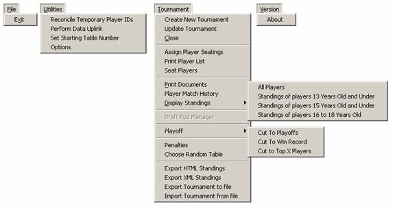
Figure 1
File Menu:
Utilities Menu
Tournament Menu
Version Menu
· About - Displays the version of Mantis you are using.
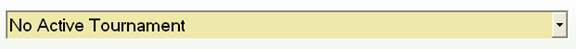
Figure 2
The Tournament List Selector displays the names of all the active tournaments on this computer. Select a tournament from the drop-down list to switch between open tournaments.
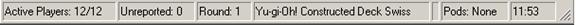
Figure 3
The status bar is located at the bottom of the Mantis interface and displays status about the selected tournament, including:
· Active Players: The first number displays the number of active players in the tournament and the second number displays the total number of players.
· Unreported: The number of matches that have not been reported for this round.
· Round: Displays the current round or if viewing a previous round, the first number will display the viewed round and the second number will display the number of rounds in the tournament.
· Tournament Format: This box will display the game, format and pairings structure for the tournament. If the tournament is in playoffs, the pairings structure will display “Playoffs.” To change these settings, see [Updating a tournament].
· Team Format: If the tournament is a team format, that information will be displayed here.
· Pods: If the tournament is using draft pods, this will display the number of pods that exist, otherwise it will read “None.” See [Draft Pods] for more information about draft pods.
· Timers: If a timer is set up for this tournament, it will appear in the bottom-right box of the status bar.
The Enroll Player Tab is divided into the following sections:
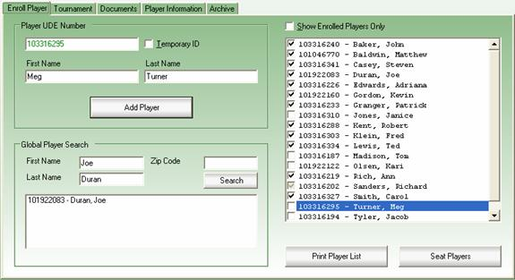
Figure 4
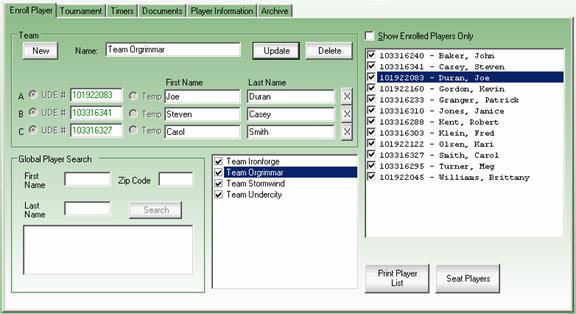
Figure 5 (Team Enrollment)
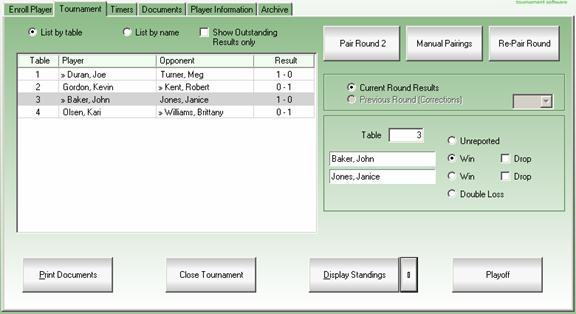
Figure 6
The Tournament Tab is divided into the following sections:
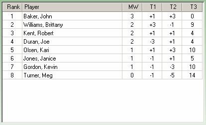
Figure 7 (Standings)
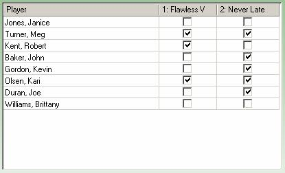
Figure 8 (Goals)
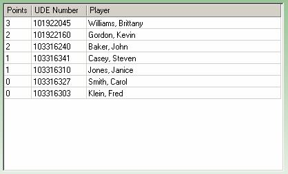
Figure 9 (Grand Melee)
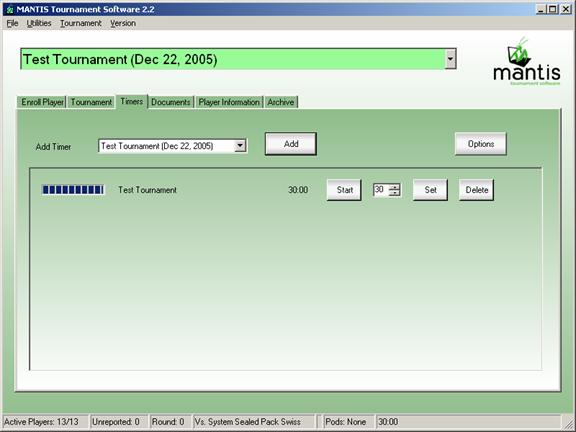
Figure 10
This screen allows the scorekeeper to create timers for the tournaments in progress. The timers can each display a message when a round is over, or at specified intervals before or after the end of the round (these are set in the Timer Options.)
To add a timer for a tournament, select that tournament from the drop-down list in the Timers tab then press the “Add” button. If needed, the length of the round can be adjusted using the text box next to the “Set” button, then press the “Set” button. If needed, multiple timers can run simultaneously for any tournament.
Press the “Start” button to begin the timer. The Progress bar to the very left will get smaller as the end of the round approaches, and the Time Remaining in the round will change as the timer is running. All timers that belong to the currently selected tournament will appear in the status bar, in the box on the farthest right. The Start button will change to “Stop”, and press the button to stop the timer. When you no longer need the timer, press the “Delete” button next to the timer.
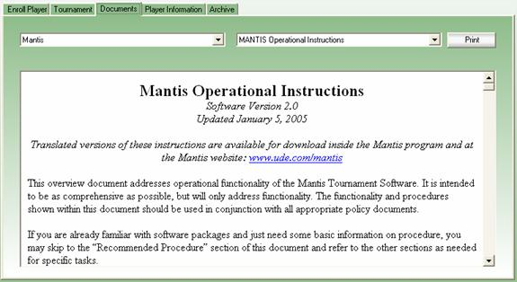
Figure 11
The Documents tab displays current documents installed into Mantis. This list will be updated by downloads from the Data Uplink feature (see [Tournament Reporting/Data Uplink] for more information.)
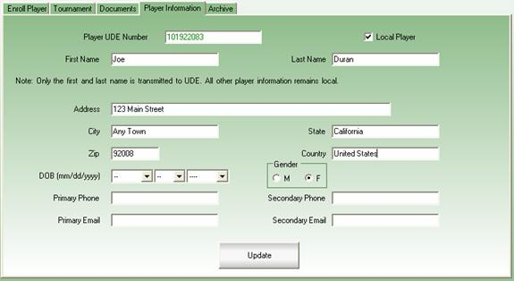
Figure 12
The Player Information Tab records details about a player. From here, you can make spelling changes to a player’s name and record other information. Note that this information is not uploaded to Upper Deck, nor is this information downloaded from Upper Deck. Any information the Tournament Organizer wishes to record must be collected directly from the players.
Players with the birth date field will appear in appropriate standings when displaying the standings of specific age groups.
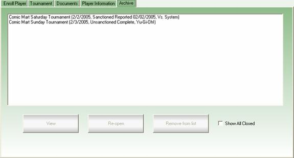
Figure 13
Closed tournaments are listed in the “Archive” tab. All tournaments listed here can be viewed by pressing the “View” button (the Tournament List Selector will highlight red when closed tournaments are being viewed) and all tournaments except those that have been uploaded can be re-opened with the “Re-Open” button, which permanently returns the tournament to “Open” status. “Remove from list” will hide a tournament from this list, while “Show All Closed” will display all closed tournaments while it is checked. Closed tournaments will be marked “Completed”, uploaded tournaments will be marked “Reported” and tournaments that have been verified uploaded completely will be marked “Final.”
Mantis uses a database to store information while running a tournament. The design of Mantis is such that any actions performed immediately update the database. The user may therefore close the software at any point without losing any previously entered data.
This section provides brief details about the information that is tracked by Mantis.
Note: The database used by Mantis is password protected, you should not attempt to manually modify any information within the database. Doing so could compromise data integrity. If there is ever a problem within the tournament that you do not believe can be corrected through the interface, please contact an Upper Deck Mantis Representative for assistance.
There are two levels of player information tracked by the Mantis Software. A global player database allows quick entry of player data, even if the player has never played in a local tournament previously. It also allows for player lookup if a player has forgotten their UDE Membership Number.
In addition, a local player list allows tracking of more detailed information of players who participate in local events.
Mantis tracks multiple tournaments and may even have multiple tournaments running at the same time. Match results are stored for all locally run tournaments and can be viewed for historic events.
All of your tournaments are tracked within the Mantis Software. If you wish to use Mantis to run a sanctioned event, you will need to obtain a sanctioning number. It is not necessary to obtain a sanctioning number prior to running your event. However, it is strongly recommended that you obtain a sanctioning number for your events several days in advance through the Data Uplink dialog. (Note: Mantis must be connected to the Internet for this.) Your tournaments will appear on the UDE website, which allows players to find your tournament and compare their rankings to other players' around the world.
You may also run non-sanctioned events using the Mantis Tournament Software.
Note: To sanction an event, you must be a certified UDE Tournament Organizer. To learn more about how to become a certified UDE Tournament Organizer, please visit our website at http://www.ude.com/judge.
Tournament Reporting is accomplished through a Mantis Data Uplink via the Internet. This same data uplink is used to obtain tournament sanctioning numbers, download global player information and create tournament location information that will be used to publish events on the Upper Deck tournament website.
Access the Data Uplink from the Utilities Menu. Note that to perform a data uplink, you must provide your UDE Number and password to verify your identification. If you do not know your password, please email player@upperdeck.com and request it (you will be asked to provide additional information to verify your identity.)
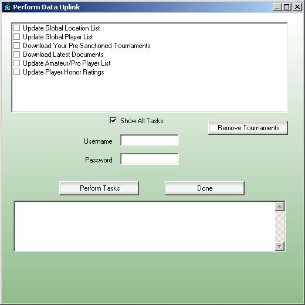
Figure 14
The following functions may be performed using the Mantis data uplink:
Note: Checked items sometimes may not complete successfully. Please review any messages generated by the uplink procedure to ensure that all tasks were performed properly.
To create a new tournament in Mantis, select the “Create New Tournament” menu item from the Tournament Menu located at the top of the Mantis interface.
You will then be able to define your tournament with the following screen:
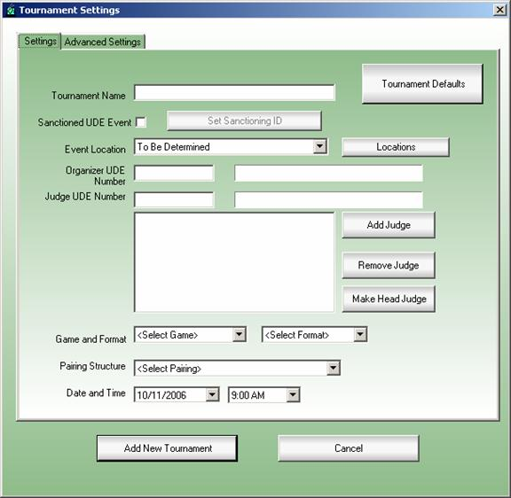
Figure 15
Note – If you are running a non-sanctioned tournament, you will not be required to provide any information except a name for the tournament and the pairing structure (Swiss, Single-Elimination, etc). You may enter the remaining information if desired for your own tracking purposes. If you are running a sanctioned tournament, all fields within this screen must be completely filled out.
Tournament Name – Enter the name of the tournament. The name entered here will be the display name of the event and will appear on screens and reports to help you identify the event.
Tournament Defaults – You can configure “default” settings for your tournaments for each game in our “Options” dialog. For example, you can set default tournament names, locations, and judges for Yu-Gi-Oh tournaments, and a different set of defaults for Vs. System tournaments. This button displays the games available in your Mantis, and will load the default values for the one you choose.
Sanctioned UDE Event – Check this box if this tournament will be a sanctioned UDE tournament. This will be used to determine whether or not an online sanctioning number is necessary for the event and if the results of this tournament will be uploaded to the Upper Deck website.
Set Sanctioning ID – This button is used to set the ID for a tournament that has already been pre-sanctioned. This is only used for tournaments pre-sanctioned from a different copy of Mantis or through the Upper Deck Entertainment website when you cannot download that Tournament Organizer’s pre-sanctioned tournaments in the Data Uplink.
Event Location – A description of where the tournament will take place. This list contains all locations associated with the present organizer. This description will be used to advertise your event. If your event location does not appear in the drop-down list, please refer to the “Creating an Event Location” section for further information.
Organizer UDE Number – The UDE membership number of the organizer of the tournament. Note that if the organizer exists within the local player list, the organizer’s name will be displayed. As such, it is always a good idea for an organizer to add him/herself to the local player list.
Judge UDE Number – The UDE membership number of any judges of the tournament. If the judge exists within the local player list, the judge’s name will also be displayed. As such, it is always a good idea for the organizer to add all judges to the local player list. Multiple judges may be assigned to the tournament. To add a judge, enter the judge’s UDE Number and press the “Add Judge” button. You may remove a judge from the list by highlighting that judge and pressing the “Remove Judge” button. The head judge for the event will have the letters “HJ” in front of his or her UDE number and may be set by highlighting a judge’s UDE number within the judge list and pressing the “Make Head Judge” button. Note that all sanctioned events must have a head judge.
Pairings – The type of pairing system to use for the tournament. Current options are “Swiss”, “Single Elimination”, and “Single Elimination – Random Pairing”.
Game – The Upper Deck Entertainment game being run during the tournament. Current options are Yu-Gi-Oh, Vs System, Quickstrike and World of Warcraft.
Format – The sanctioning format of the tournament, either “Constructed Deck” or “Sealed Pack”.
Date and Time – The projected date and time that the event will be run. Note – This date will be used when referencing your tournament online, regardless of the actual date that the event was held.
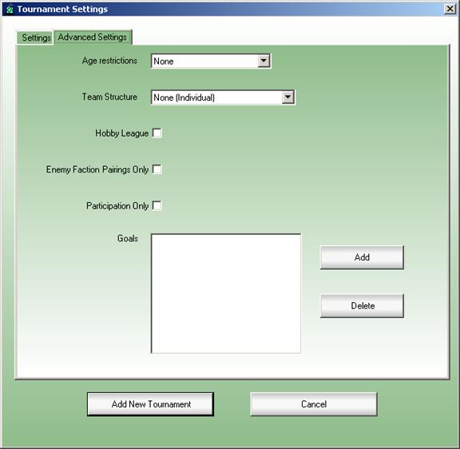
Figure 16
Age Restrictions – If there are any limitations on the ages of the players, they should be selected here. Note that it is up to the tournament organizer to collect the players ages, and ensure each player meets the age restriction.
Team Structure – Mantis now supports two- and three-player team events.
Hobby League – If this tournament is a Hobby League tournament, check this box. Please note that not all formats available to Hobby League organizers are available via Mantis.
Enemy Factions Only – World of Warcraft tournaments with Constructed Decks gives the players the ability to choose which faction they wish to represent in the tournament. This option ensures that players of the same faction do not play each other during the swiss rounds of the tournament.
Participation Tournament – Participation tournaments will not apply the wins and losses a player receives to their official Upper Deck Entertainment Player Rating. If this tournament is uploaded, the enrolled players may earn “Honor Points” instead.
Goals – In addition to dueling other players in the tournament, the Tournament Organizer may declare other goals for the players to perform during the course of the tournament. This area is to manage these goals.
“Add New Tournament” – Once the tournament information has been entered, press this button to create the new tournament record and return to the main Mantis screen.
“Cancel” – Press this button at any time to return to the main interface without creating a new tournament.
Updating a tournament lets you change the settings in the tournament (Name, Date, Format, etc.) after the tournament has been created with the following limitations:
Important – If you installed Mantis 2.0 on a computer that previously had an earlier version of Mantis installed, you may need to first use the “Perform Data Uplink” function to obtain a list of all established tournament locations. If the location of your tournament does not exist as an established location, you may use this functionality to add it. Once you have created a new location and used the Data Uplink to report that location to Upper Deck, it will appear on the Upper Deck website and be available for download to Mantis installed on other computers.
If the location of your event does not exist in the list of event locations on your system, you may access the global list of event locations by pressing the “Location” button located on the “Create New Tournament” dialog. You may search for event locations in your area by entering City, Country, Zip/Postal Code, and/or Name information and pressing the “Search” Button. If there are locations returned by the search, you may add these locations to the list of locations on your system by checking the box next to the event location that you would like to include and press the “Select” button to return to the “Create New Tournament” dialog.
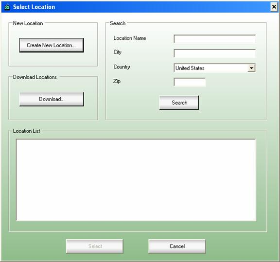
Figure 17
If you are unable to locate the event location you are looking for, press the “Create New Location” button and enter the information for your event location as accurately as possible, then press the “Select” button to return to the “Create New Tournament” dialog.
Local Players may be added to your local Mantis database at any time.
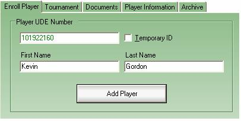
Figure 18
Make sure that the “Enroll Player” tab is active and enter the following information for the player that you wish to add to your local player database:
Player UDE Number – This is the player’s 9-digit UDE Membership Number. If you attempt to enter a non-valid Membership Number, the number will become red and you will not be allowed to proceed. Once the number becomes green you will be allowed to enter the player’s information. If it is necessary a temporary UDE Membership Number may be assigned in order to begin the tournament. This temporary number must be resolved before sanctioned tournament results may be reported to Upper Deck (See [Reconcile Temporary IDs] for more information)
First Name and Last Name – Enter the player’s name.
“Add Player” – Click this button to add this player to the local player database.
Once the player has been added, that player’s name and UDE Number will appear in the list of local tournament players:
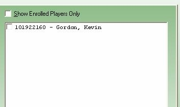
Figure 19
Notes:
Important – In order to search for the UDE number of an existing player, you must first have downloaded the list of global players using the “Perform Data Uplink” functionality. If you installed Mantis on a computer that has never had Mantis installed before, your database may already have a recent version of the global player list.
Searching for a player’s UDE Number is useful for players who have a UDE Number, but do not remember it. To search for a UDE Number, enter the player’s zip code of the address they used when creating their UDE account or enter the zip code and the player’s first and/or last name, then press the “Search” button. Note that depending on your system speed, it may take a moment or two to process the search.
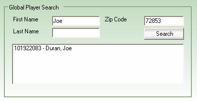
Figure 20
Any results will be reported along with each player’s full name and UDE Number. Pressing a player’s name in the results window will display them in the “Player UDE Number” area, from which they can be added to your local player list (and tournament, if you have one selected.)
If you are unable to find the player using this method, you may still enter the player into the tournament using a temporary player ID. However, be aware that you will not be able to report any completed tournaments with un-reconciled temporary IDs. It will be your responsibility to follow up with the player to make sure their UDE number is properly obtained. See [Reconcile Temporary IDs] for more information.
There are two tournament formats now, so the way you add players depends if the tournament is an “Individual” or “Team” tournament. This section is for “individual” format tournaments; see [Adding Players and Teams to a ‘Team’ Tournament] for instructions for a team-format tournament.
There are several methods of adding a player to a tournament. The method you choose will depend on what type of tournament you are running, as well as whether or not the player being entered already exists in your local player list.
Regardless of the method used, the first step is to ensure that an active tournament has been selected. Simply select the tournament you wish to add players to from the [Tournament List Selector] located at the top of the interface:
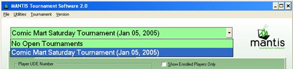
Figure 21
To add a player from the list of local players, simply locate the player within the list and check the box next to the player’s name:
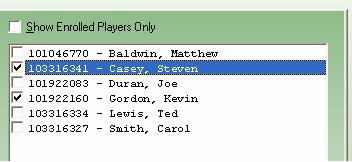
Figure 22
With the player list active, you may locate a player more quickly by typing the first letter of the player’s last name to scroll automatically to that portion of the local player list.
Note that this method of adding players only works if the “Show Enrolled Players Only” check box has not been selected.
Note: If a player does not already exist within the list of local players, you will need to add them via Player UDE Number. If you are running a larger event and are entering all players via Player UDE Number, it is recommended that you check the “Show Enrolled Players Only” check box for ease of viewing enrolled players.
To add a player to a tournament via Player UDE Number, make sure your tournament is selected in the Tournament List and see the section called “Adding Players to the Local Player List.” These players will be added to both the tournament and the local player list.
There are two tournament formats now, so the way you add players depends if the tournament is an “Individual” or “Team” tournament. This section is for “team” format tournaments; see [Adding Players to an ‘Individual’ Tournament] for instructions for an individual-format tournament.
Managing Teams in a Team Tournament is actually a two-part process: managing the teams themselves and enrolling teams into the tournament.
Regardless of the method used, the first step is to ensure that an active team-format tournament has been selected from the [Tournament List Selector] located at the top of the interface:
Figure 23
To create a new team, click the “New” button in the “Team” area of the “Enroll” tab. Enter a name for the team in the box next to the word “Name.” To add players to the team, enter UDE Numbers in the boxes in the column labeled “UDE Number” and enter (or make changes to) their names if necessary
To add a player from the list of local players, simply locate the player within the list and check the box next to the player’s name:
With the player list active, you may locate a player more quickly by typing the first letter of the player’s last name to scroll automatically to that portion of the local player list.
Note that this method of adding players only works if the “Show Enrolled Players Only” check box has not been selected.
Note: If a player does not already exist within the list of local players, you will need to add them via Player UDE Number. If you are running a larger event and are entering all players via Player UDE Number, it is recommended that you check the “Show Enrolled Players Only” check box for ease of viewing enrolled players.
To add a player to a tournament via Player UDE Number, make sure your tournament is selected in the Tournament List and see the section called “Adding Players to the Local Player List.” These players will be added to both the tournament and the local player list.
Once the tournament has started, you may still add (or re-add) a player to the tournament, but they will be entered with a match loss for the current round and all previous rounds of the tournament that they didn’t play.
If a player entering late should receive a match win or be paired with another player instead of receiving a match loss, this may be accomplished by changing the results of the match and/or by using the “Manual Pairing” feature to pair the late arrival with another player.
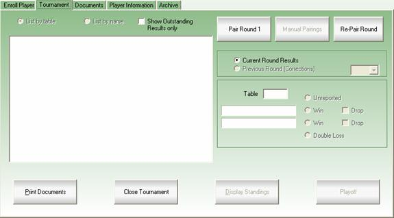
Figure 24
There is no specific procedure for beginning the tournament itself. Once all of the players have been entered into the database, you begin the tournament by pairing the first round.
The presentation of the first round, as well as how subsequent rounds are processed, depends upon the tournament pairing structure being used for the tournament. The pairing structure is selected in the “Create New Tournament” and “Update Tournament” menu items in the “Tournament” menu.
Pairing the round is a simple matter of pressing the “Pair” button on the “Tournament” tab. The pairings for the round will then be displayed, ready for results entry:
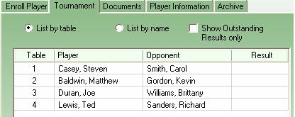
Figure 25
Note: The button to pair the next round will not be accessible while there are still results to be entered from a previous round.
To quickly print a set of pairings for the round, press the F9 key. For more printing options, see "Documents/Forms/Reports."
Important – When running a tournament using Swiss Pairings, you will use the same “Pair” button to pair each round of the tournament. Do not use the “Playoff” button until you are ready to run the single-elimination playoffs.
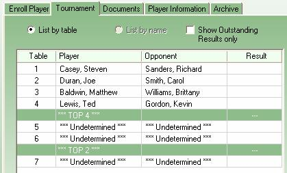
Figure 26
If you are ready for single elimination playoff pairing, run the full number of Swiss rounds, then press the “Playoff” button on the “Tournament” tab located beneath the results entry fields or select the “Cut to Playoffs” menu item in the “Tournament” menu. You will then be prompted to select the number of players for the playoff pairings. If there are fewer players than the selected number, BYES will be awarded as appropriate.
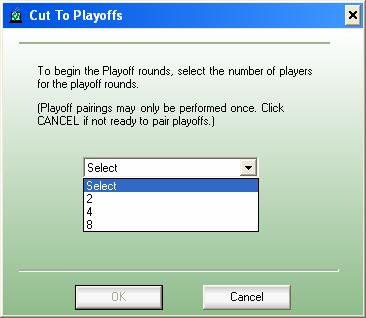
Figure 27
If you are continuing Swiss rounds but are eliminating players based on their win record, select the “Cut to Win Record” menu item in the “Tournament” menu to drop all players who don’t meet that requirement.
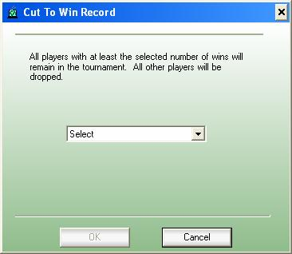
Figure 28
If you are continuing Swiss rounds but are eliminating all but a specific number of players, select the “Cut to Top X Players” menu item in the “Tournament” menu. If you would like to include players tied in match wins with the last eligible player in the top X, check the box labeled “Players Tied with the cutoff rank will remain enrolled in the tournament.”
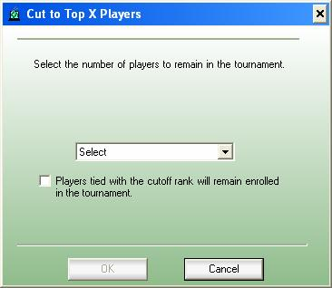
Figure 29
It is typically not recommended to re-pair a round unless there have been problems that cannot be resolved easily. For example, you may need to re-pair a round if one or more of the following have occurred during the current round:
In many instances, the manual pairing functionality may also be used to correct such circumstances. Depending on the circumstances, you will need to weigh the amount of effort required to determine a manual solution versus the level of disruption that will be caused by having to reseat all players.
A round is re-paired by simply pressing the “Re-Pair Round” button.
Caution: Re-Pairing a round will permanently delete all records of the current round as it exists. Only use this option if you are just beginning a round and wish to reseat all players. You will be prompted to verify a re-pairing.
Occasionally, situations may arise that require a manual adjustment to the pairings that were generated by the computer. For example, pairing a late arrival against a BYE or correcting a pairing after discovering a mistakenly entered result from a previous round.
All manual re-pairings are accomplished through the Manual Pairings screen. Once you have accessed the Manual Pairings screen, you will not be able to do anything within the main interface until you have completed the manual re-pairing and either accepted or rejected the results.
Note: If you are running an event with draft pods, you will only be allowed to pair players within their current pod. Select the pod number containing the match-ups that you wish to re-pair.
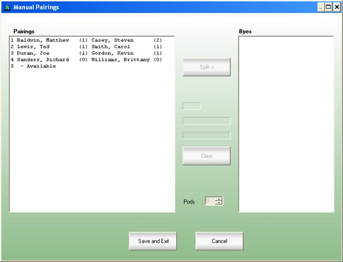
Figure 30
The number of wins a player has will be listed in parenthesis to the right of the player’s name in the “Pairings” window and to the right of the player’s name in the “Byes” window. The Manual Pairing system will always have a list of valid pairings and BYES. As such, the “Save and Exit” button will always be available. When pressed, the values shown in the pairing window will replace previous pairings for the current round, even if there is an unconfirmed pairing which has not been complete. At any point, you may press the “Cancel” button to return to the main interface without adjusting any of the previous pairings.
Splitting a pairing is the act of removing a pairing from the system. Both players at that table will be shifted to the list of players with BYES for the round:
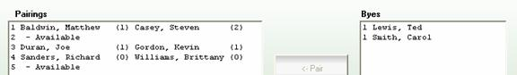
Figure 31
To split a pairing, select the pairing and press the “Split ->” button. Alternately, you may split a pairing by simply double-clicking on the pairing.
A new pairing may be created from the list of players with BYES. Select a player from the list of players with BYES. The selected player will appear in the pairing to create.
You may press the “Clear” button to remove the player from the pairing that you are creating. Once you have selected two players, press “<- Pair” to confirm that you wish to create that pairing. You may also create a pairing by double-clicking on the player that you wish to pair.
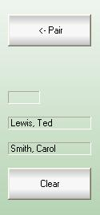
Figure 32
The pairing list will now be updated to reflect the new pairing.
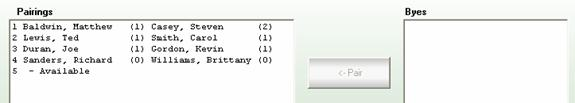
Figure 33
Note that you may manually assign a new pairing to a specific table by selecting any table listed as “Available” prior to creating the pairing. If you do not select a specific table, the new pairing will be assigned to the first available table. Pairings that are not split will remain at their existing table numbers.
Note: Pairings that have been split will not retain any entered match results information, even if the two players were reassigned to play each other.
Once the updated pairings have been made and are satisfactory, press the “Save and Exit” button to save the changes.
Note: any players assigned BYES due to their pairing being split via manual pairings will be considered to have a match win for that round. Players who began the round with a BYE (either a match loss or a match win) will keep their original record.
There are a number of methods to enter the results of a match into the Mantis system. The method you chose to use will depend entirely upon personal preference. The three methods are “Result Entry by Table Number,” “Result Entry via Pairings/Standings window,” and “Result Entry via Hot Key.”
To enter the results of a particular table, select the table you wish to report by either selecting that table from the Pairings/Standings window, or entering the table number in the results entry area:
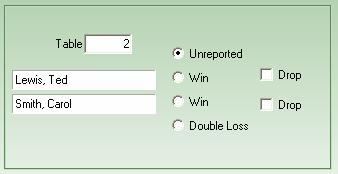
Figure 34
Press the “Win” button corresponding to the player who won the round. In the event of a double-loss (typically due to penalties), press the “Double-Loss” button. You may also reset the match to “Unreported” status. This is useful in the event that a match result is accidentally entered for the wrong table.
If either player within a pairing wishes to drop from the tournament, check the box labeled “Drop” next to that player’s name.
You may also enter the results of a match directly in the Pairings/Standings window. Press the right mouse button over the match whose results you would like to enter. Selected the winner of the match from the pop-up menu:
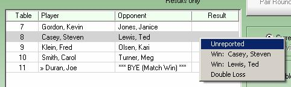
Figure 35
Note: Hot-Key entry is an advanced concept and is recommended only for very large events where efficiency of data entry is a necessity. Hot-Key entry is designed to allow for quick data-entry using a 10-key entry tool.
To enter the results of a table using the hot-key method, enter the table number then press one of the following keys:
The results of the match will immediately be recorded. Note that the selected keys are laid out similar to the match results entry slip. The ‘-‘ key is used to report player 1 winning because it is above the ‘+’ key on the 10-key layout, just as player 1 is above player 2 on the results entry slip.
Once you are finished entering a results via the hot-key method, you may immediately enter the next table number and results without need of any intervening keystrokes.
If an incorrect result is discovered within the same round, simply correct the result by following the procedure described for Match Results Entry.
If an incorrect result is discovered for a previous round, select the appropriate round using the Previous Round Selection area:
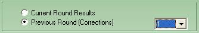
Figure 36
Select the round of the incorrect results and change them in the same manner that you would when entering results normally. You will be prompted to verify a change in results for previous rounds.
If a player wishes to drop from the event, follow the instructions for results entry by table number. In the “Results Table Entry” area of the Tournament tab, check the box labeled “Drop” corresponding to the player that wishes to drop from the event.
Most often, the player will be dropped when the results of the match are entered, however you may drop a player at any time, even before his match results have been entered.
You can recognize a dropped player in the Pairings/Standings window by an ‘X’ to the left of their name:
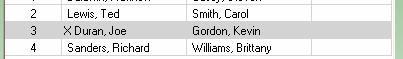
Figure 37
You may also drop a player from the Enroll Player tab by un-checking the box next to the player’s name. Note that an enrolled player who has been dropped from an event will still have a checkmark next to their name, but that checkmark will appear lighter than the checkmark of those players still participating in the event. This method does not apply to single elimination tournaments.
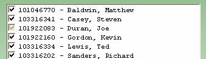
Figure 38
Once a player has dropped from the event, you may un-drop that player simply by reversing either of the above processes.
Note that if a dropped player decides to re-enroll in the tournament and one or more rounds have been paired since the time the player dropped, that player will be given a match loss for all missed rounds (including the current round.)
Players may be added to the tournament at any point. However, a player added after the first round of the tournament will be given a match loss for all rounds that the player did not participate in.
Note: All players added to a tournament after the current round has been paired (whether a late player or a re-enrolled player) will be given a match-loss for the current round of the tournament. If that result is not correct based on the circumstances, the following procedures may be taken:
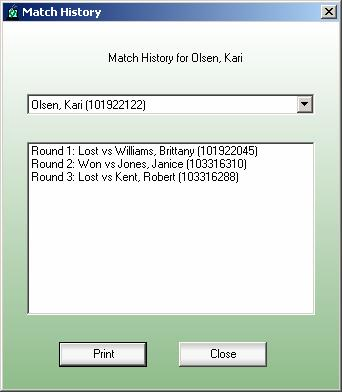
Figure 39
The matches a player and team have played can be quickly viewed by selecting “Player Match History” in the Tournament menu, or by right-clicking that player’s or team’s name in the Results Entry area.
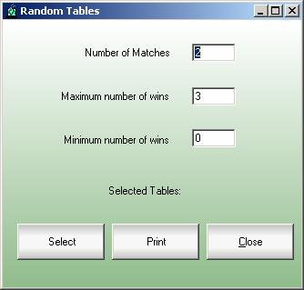
Figure 40
The scorekeeper can use this screen to randomly choose matches from the tournament. If necessary, the scorekeeper can narrow the pool of players based on their wins (for example if the scorekeeper wants to choose from players with more than 2 but less than 4 wins.) Press the “Select” button to randomly choose tables based on the options. The “Print” button will print the selected tables with the players at those tables, twice on the same page.
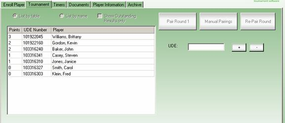
Figure 41
The scorekeeper can add points to players in a Grand Melee tournament by clicking that player’s name in the Standings box or entering that player’s UDE Number in the “UDE” box, then pressing the “+” button. If a player has been given too many points, the minus button will remove one. If a player is not enrolled into the tournament, entering their UDE Number and pressing the “+” button will enroll them and add them to the list.
When a tournament is complete, closing it prevents accidental changes in the future. The tournament will be removed from the Tournament List Selector and placed in the “Archive” tab where it can be later viewed or re-opened if necessary. Sanctioned tournaments must be closed before they can be uploaded, and once uploaded cannot be re-opened. If the “Close” menu item is disabled, make sure the tournament is complete using the criteria below.
During the course of sanctioned tournaments, it may be necessary to assign a penalty to a player based on the established penalty guidelines. Select the “Penalties” menu item from the “Tournament” menu to access the penalty entry screen. Penalty tracking is not necessary during a non-sanctioned tournament, but may be valuable for your own records.
Note: You will only be allowed to assign penalties to a tournament when there is a head judge listed for the tournament.
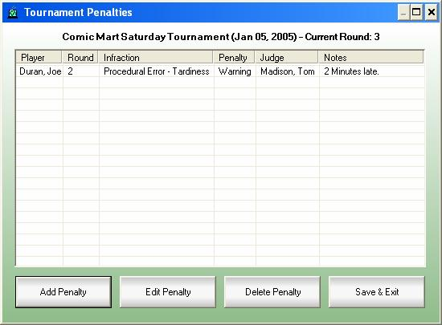
Figure 42
Selecting the “Penalties” menu item will display the “Tournament Penalties” screen. If there have been penalties assigned during the current tournament, they will be listed here. From this screen, you may perform the following actions:
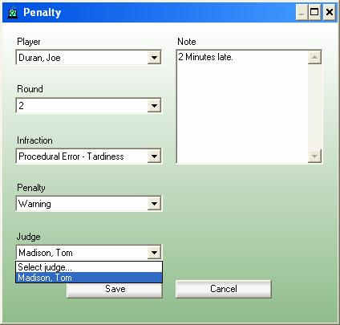
Figure 43
To enter a new penalty or edit an existing penalty, simply supply the following information:
Note – you can add a penalty directly for a player by right-clicking that player’s name in the results table entry section on the “Tournament” tab and selecting “Player Penalty.”
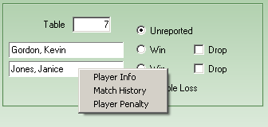
Figure 44
Players are ranked within the tournament by their match points. A player receives 1 match point for each match that they win and 0 match points for each match that they lose.
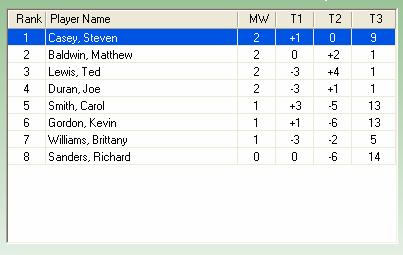
Figure 45
Standings for the tournament can be viewed directly in Mantis (press the “Display Standings” button on the “Tournament” tab), printed (see [Documents/Forms/Reports]) or exported to a file in HTML format (see [HTML Standings and Pairings].)
Special standings can be displayed that only include players of a specific age group. The standings will only include players who have their birthdates entered in the “Player Information” tab. These birth dates are not downloaded from Upper Deck during the Global Player Updates, they must be collected by the tournament organizer and scorekeeper.
The following documents, forms, and reports are available within Mantis:
The player list is an alphabetical list of all players within the tournament. The purpose of the player list is to provide a list of all entered players so that the players in the tournament can verify that they have been entered into the computer prior to beginning the first round of the tournament. Pressing the “Print Player List” button from the “Enroll Player” tab in Mantis accesses this feature.
The Seat Players feature allows the tournament organizer to assign all the players in a tournament seats without creating pairings. Options in the “Seatings” dialog allow the players to be seated alphabetically (to assist in deck list collection) or seated randomly. The printout can be printed and sorted by the player name or by the table they sit at. This dialog appears when pressing the “Seat Players” button on the “Enroll Players” tab in Mantis.
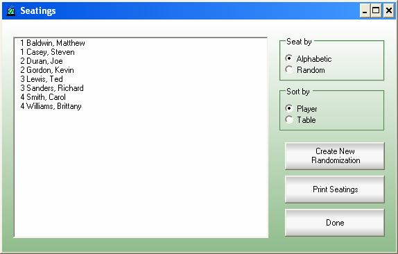
Figure 46
When using draft pods, the pod assignment list displays a list of all players and their assigned draft pod. The players are listed with the number of their pod as well as their seat number within the pod.
The pod assignment list is printed from the Draft Pods screen and is printed upon creation of a new draft pod. (See [Draft Pods] for more information.)
When using draft pods, the pod seating creates forms that may be cut and placed on each draft table so that the players within the draft pod at that table will have a reminder of which draft seat they have been assigned to.
The pod-seating list is printed from the Draft Pods screen and is printed upon creation of a new draft pod. (See [Draft Pods] for more information.)
Most of the reports can be printed using Custom Page Breaks. You will see an area similar to the image below. These would only apply to printouts that order the players alphabetically.
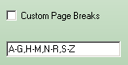
Figure 47
To create your own custom Page Break format, decide which groups of letters will appear on each page.
1) Use a dash character (-) to identify a group of letters to appear on a page.
2) Use a comma (,) to separate the pages.
3) Any players whose names are before the very first letter will appear on the first page
4) Any players whose names would appear after the last letter will appear on the last page.
In the image above, the players would be divided into 4 pages: the first page will contain all players whose names start with A, B, C, D, E, F and G. The second page will have all players whose last names start with H, I, J, K, L and M. The third page will have letters N through R, and the last page will have players S through Z. If any players were not printed, they will appear on the first or last page, depending on their last name.
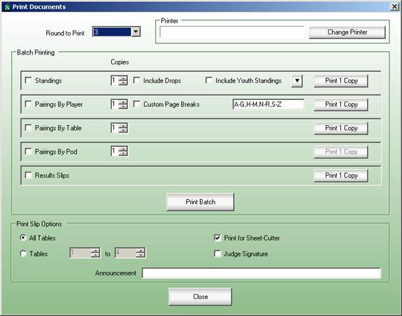
Figure 48
The pre-round reports are all printed from the printing screen, obtained by pressing the “Print Documents” button on the “Tournament” tab. The first time you print from the screen after starting Mantis, you will need to set up your print configuration.
If you wish to print a specific document at the beginning of each round, check the box in the “Batch Printing” area corresponding to that document. If you wish to print multiple copies of a document at the beginning of each round, use the “copies” field for that document to set the number of copies that you would like to print.
You may also print a single-copy of a document by pressing the appropriate button in the “Single Copy Printing” area of the screen.
For example, for a typical 100 player tournament, you may want to print 2 copies of the pairings by player to be posted for the players, 1 copy of the pairings by table for scorekeeper reference, and result slips to be placed on the tables for the players to fill out. To do this, check the boxes next to “Pairings By Player”, “Pairings By Table” and “Results Slips” and set the number of copies to 2 for “Pairings By Player” and 1 for “Pairings By Table”.
To print all selected documents, press the “Print Batch” button. The first time you do this, if you have not already selected a printer, you will be prompted to indicate the printer that you would like the documents to print to. For subsequent print jobs, the system will automatically use the selected printer and will maintain the list of documents for printing at the beginning of each round.
In this example, if you later wanted to print a copy of the standings, you could do so by pressing the button labeled “Standings” in the “Single Copy Printing” area of the screen. Alternately, if you wanted to start printing standings beginning with the 5th round of the tournament, you could do so by checking the “Standings” box prior to printing documents for that round.
Note: If you wish to print any of the following documents for a round other than the current round, select the appropriate round from the “Round to Print” drop-down box prior to printing.
The standings report is a list of all players within the tournament ordered by their standings within the tournament. In addition to player name, it lists the match wins and tiebreakers that were used to sort the players within the list. If the current round is not complete, the standings will reflect the last complete round.
Pairings by Player is an alphabetical list of all players within the tournament who have not dropped. They are listed along with their pairing for the current round, including table number and opponent. The purpose of this report is to post the pairings at the beginning of each round so that players will know whom they are playing against and where they should sit for their match. When running a team tournament, this option will read “Pairings by Team.” It will print out the list of team names and a list of the players individual seats.
To quickly print a set of pairings for the round, you may also press the F9 key.
Pairings by Table is the same information contained within the Pairings by Player report, but sorted by table number. The judge or scorekeeper typically uses this report to verify seating.
Results slips are created one per table for the current round. They are printed 4 per page and should be separated using a paper cutter or scissors and distributed to the players. When players finish their match, they should fill out the information on the result slip and turn it in to the scorekeeper for entry into the computer.
In addition, when printing results slips, you may specify the following options within the “Print Slip Options” area of the screen:
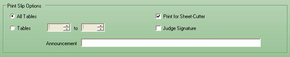
Figure 49
All Tables/Tables – Select either to print for all tables, or to print for a range of tables. Under most circumstances you will want to print for all tables, but you may occasionally be required to print for specific tables due to manual pairings or damaged result slips.
Print for Sheet Cutter – Check this box if you are using a paper-cutter and wish to have the print slips numbered in a collated order such that slip 1 is the first slip on the first page, slip 2 is the first slip on the second page, and so forth. Without checking this box, slips 1 through 4 will be on the first page and so forth.
Announcement – Type an announcement that will appear on all results slips. If an announcement is used, a gray box will appear around the announcement to call the players’ attention to the announcement. Announcements can include anything, but examples might be to announce a lunch break after the current round with a time to return, a welcome message to the tournament, etc.
Print for Sheet-Cutter – When not checked, the result slips will be printed in order down the page, tables 1-4 on the first page, 5-8 on the second, etc. When checked, they will be ordered differently so that using a sheet-cutter to cut the stack of slips into 4 mini-stacks will have the slips ordered within each mini-stack (one mini-stack will have the first group of tables, the second mini-stack the next group, etc).
Judge Signature – When checked, the result slips will have space for a third signature for a judge to verify the results.
Selecting the “Export HTML Standings” or “Export XML Standings” menu item in the “Tournament” menu exports the pairings and standings of all rounds into a folder called “HTMLExport” or “XMLExport.” These folders will in the directory Mantis is installed (usually C:\Program Files\Upper Deck\Mantis). After the files are created, a dialog appears asking if you would like to view those files in Windows Explorer. The HTML Export creates two files for each round: Pairings and Standings. The XML Export creates a single XML file with all the same data as the separate HTML pages, but all rolled into one file.
Note: each time standings and pairings are exported, all existing standings and pairings in the output directory are erased and replaced with the current tournament. Standings and pairings that have been renamed will not be deleted.
Mantis supplies functionality to support multi-pod draft formats. Note that this is advanced functionality and will not be necessary for most users of the software.
Draft pods are groups of 7-8 players who are assigned to draft from the same set of cards. If you are unfamiliar with the draft format of play, it is recommended that you read the Tournament Floor Rules sections on drafting prior to reading this section.
Note that draft pods should be created prior to the round in which they will be used, after the previous round has been completed. If draft pods will be used at the start of the tournament, create the pods before pairing round one of the tournament. Once draft pods are created, players should be assigned to draft areas within their draft pods. Throughout the course of the pod, all players within an individual pod will only be assigned to play against other players within the same draft pod. It is allowable for two players that have played previously in the same tournament to be paired against each other again within the rounds of a draft pod.
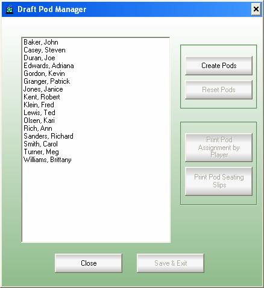
Figure 50
To create draft pods, select the “Draft Pod Manager” menu item from the "Tournament" menu. This will display the Draft Pod Manager screen. Pressing the “Create Pods” button will create draft pods for subsequent rounds of the tournament.
Note:
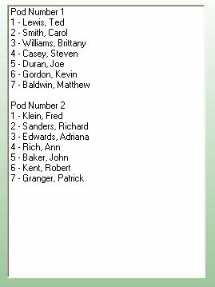
Figure 51
Draft pods assignment is based on the full standings of players within the tournament. Seating within each draft pod is assigned similarly to a Swiss tournament: randomly paired against players of equal win records.
Pressing the “Print Pod Assignment by Player” button will print the list of players in the tournament along with the pod and seat they are assigned to draft in. Pressing the “Print Pod Seating Slips” button prints the same information but all players in the same pod are grouped together; these slips can be distributed to each table to remind the players their seats.
Once draft pods have been created, you will save the draft pod information and continue your tournament as normal. The system will continue to assign pairings within the current draft pods until the draft pods are reset or until another draft pod group has been created.
If you wish to continue using Draft Pods in a tournament but need to create new pods (to reflect the players’ new records) simply click the “Create Pods” button to create new pods. Be sure to save the settings when you exit this dialog.
Once you have run the sufficient number of rounds with the current draft pods, you can remove the draft pods by entering the Draft Pods screen and pressing the “Reset Pods” button. If you are creating a new set of draft pods, you may simply press the “Create Pods” button and the new draft pods will replace the existing pods. If you do not press the “Create Pods” button, the tournament format will become a normal Swiss tournament.
Under most circumstances, you should have the tools necessary to perform all necessary actions within Mantis, even if data has been entered improperly. Since all changes to the tournament are immediately recorded in the database, so even if power is lost, you will not lose any data. However, there are often unforeseen complications within tournaments, so it is always a good idea to make sure that you have a backup of your database.
In addition, Mantis provides functionality to move a tournament from one system to another through the tournament backup functionality.
Prior to pairing a new round, Mantis automatically creates a backup file of the current tournament, complete will all results entered for that round.
In addition to the Automatic Backups, you may backup a tournament database to an external file at any point by selecting the “Export tournament to file” menu item from the “Tournament” menu. You will be prompted to enter a name for this backup.
By selecting the “Import tournament from file” menu item from the “Tournament” menu, you will be given a list of files that were generated from the current tournament. To import the previous information, simply select the file that you wish to import and press the “Import” button.
Figure 52
Important – All information will be lost and replaced with the data in the imported file. It is recommended that you perform a manual export prior to importing a tournament just to be safe.
You may also import a tournament that was backed up from a different system. When you create an export file, that file may be transferred to a different system via disk, thumb drive, email, or any other method desired. From the tournament import screen, press the “Load” button and you will be prompted to select the file. Once you do so, if that tournament already exists on that system, you will be prompted to overwrite or to leave the existing data. If it does not, it will be created in the current database and all of the data transferred.
You may view and even re-open closed tournaments from the “Archive” tab.
Select the tournament you wish to review and press the “View” button. That tournament will now appear as a closed tournament in the tournament drop-down box. The tournament name will appear with an asterisk and a red highlight to remind you that the tournament is closed. You can view all data from that tournament using the same procedures as an open tournament, but you will not be allowed to alter any of that data.
Note: The closed tournament will be available for viewing until a new tournament is created, a tournament is reopened, or Mantis is reloaded. If any of these events occur, you will need to return to the Archive tab and select “View” again.
If a tournament has been closed and additional changes need to be made to the tournament, select the tournament and press “Reopen”. You will now be able to perform any actions within the tournament that you can perform on an open tournament.
Note: If the results of a sanctioned tournament have been reported, you will not be allowed to reopen that tournament. You will, however, be allowed to view it.
If you no longer wish to see a tournament on this list, you can hide it by selecting the tournament and pressing the “Remove from list” button. This will not delete the tournament from the database, only hide it from this list.
Click this checkbox to view all closed tournaments, including ones hidden from the list.
Figure 53
Open this dialog by selecting the “Reconcile Temporary Player IDs” menu item from the “Utilities” menu. This feature is used when players are enrolled in a tournament with a temporary ID. That temporary ID must be replaced with a UDE Number before the results can be uploaded. Highlight the player whose number you wish to update, and enter their UDE Number in the box labeled “Player ID.” Press the “Assign” button to complete the procedure. If that UDE Number already exists in your local player list or the global player database, you will be asked if you want to combine all the data for the temporary player with the existing one.
Figure 54
The default starting table number is “1”, this feature allows you to change the first table of the tournament.
The “Options” menu from the “Utilities” menu will display this dialog.
Figure 55
Use this screen to select the language to display Mantis menus and dialogs.
Figure 56
Each game can be configured to have a separate group of timers. Choose a game, then you can set the default Round Length and these messages. The check box next to each message indicates if it is enabled or not, and the gray button in the same row is used to set the message.
Time Remaining: This will enable a message to display when there are X minutes left in the round (you enter how many minutes this will be in the “Minutes” box next to this checkbox.)
Round Over: When the time is over, this message will appear.
Round Late: This will enable a message to display when X minutes have passed after the end of the round (you enter how many minutes this will be in the “Minutes” box next to this checkbox.)
You add timers to each specific tournament using the “Timer” tab on the main screen.
Figure 57
Get these settings from your network administrator or Internet service provider if your computer is behind a proxy or uses a download accelerator.
Figure 58
This allows the Tournament Organizer to configure default options for the different games Mantis can run. Each game can have a default name, Tournament Organizer, Head Judge, Location, Format and Pairing. Once these are set, you use them from the “Create Tournament” dialog.
Figure 59
The only option on this screen is to set the Pro Player’ flags. With this checked (and the current list of pro players updated) all players who have participated in a pro circuit or who have earned 10 or more PC Points will appear with an asterisk next to their name.
If you have already run events using other software packages, or as you gain more experience in running tournaments, you will likely develop your own set of procedures and methods of using the tournament software. In the meantime, we would suggest the following guidelines for running a tournament using the Mantis Tournament Software:
Step 1 – Create a new tournament with the “Create New Tournament” menu item in the “Tournament” menu. Make sure you use a meaningful description for the Tournament Name. This tournament will become the selected tournament in the list of open tournaments. If the tournament will be sanctioned, you can obtain a sanctioning ID via the “Data Uplink” feature before of the actual tournament date (see [Tournament Reporting / Data Uplink] for more information.)
Step 2 – Enter players. At this point of the tournament, you should be using the “Enroll Player” tab. Make sure that the correct tournament is selected and enter each player’s UDE Membership Number and their first and last name.
Step 3 – Verify players. Print a player list and post it where all players can see. Announce that you have posted the list and that all players should verify that they have been entered into the system. If a player has been missed, enter them at this point. The player list can be printed by pressing the “Print Player List” button on the “Enroll Player” tab.
Step 4 – Pair the round by pressing the “Pair Round” button on the “Tournament” tab. The remainder of the tournament will be run from the “Tournament” tab.
Step 5 – Print pairings. Print pairings by player and post this document where the players can see it. Announce that pairings have been posted and that players should find their tables and sit down. You may also print pairings by table if desired. These can be printed by pressing the “Print Documents” button on the “Tournament” tab.
Step 6 – Print Results Slips. Once printed, you will need to use a paper cutter or scissors to cut the results slips and distribute them to their corresponding tables. Players should be informed that the reported results on these slips will be final and they should double-check the results before turning in the slips. These can also be printed by pressing the “Print Documents” button on the “Tournament” tab.
Step 7 – Announce to players that the round is starting. It is typically the role of the tournament scorekeeper to keep an official clock on the tournament. As such, the time at which the round begins should be noted so that the end of the round may be called at the appropriate time.
Step 8 – Enter match results. Be very careful to double check results entry to avoid problems that would require a correction in a later round. You should have most of the results entered prior to the end of the round so that you can assist the judges in locating any incomplete matches once time is called.
Step 9 – Repeat Steps 4 – 8 until the tournament is complete. In later rounds, you may wish to print and post standings. If you are running a single-elimination playoff, once you have run all Swiss rounds, press the “Playoff” instead of “Pair” button to generate the playoff pairings.
Step 10 – Close then report the tournament using the “Close” button on the “Tournament” tab. If this is a sanctioned tournament, make sure the results are reported to Upper Deck. (See [Tournament Reporting / Data Uplink] for more information on uploading the tournament.)
Pentium Class PC - 200MHz or faster
Internet access required for Tournament Reporting to Upper Deck
Network access required for networking functionality
The Mantis installation program will update your system if required and install the Mantis program. If you have a previous version of Mantis installed on your computer, you must uninstall that version first then install this one. Your existing data will not be deleted by the uninstall, and the new installation will automatically upgrade your database as necessary.
Press the Start Button, select Programs, select Upper Deck, and select Mantis.
Visit our website at www.ude.com/judge to learn how to become a certified UDE Tournament Organizer.
An Upper Deck Mantis Representative is here to assist you with any issues regarding this software. When contacting us, please provide as much information as you can about your computer system and the problem you are experiencing. Include your phone number so we can reach you if we need more information.
Note: Some responses may take between five to ten business days.
E-mail: entertainment@upperdeck.com